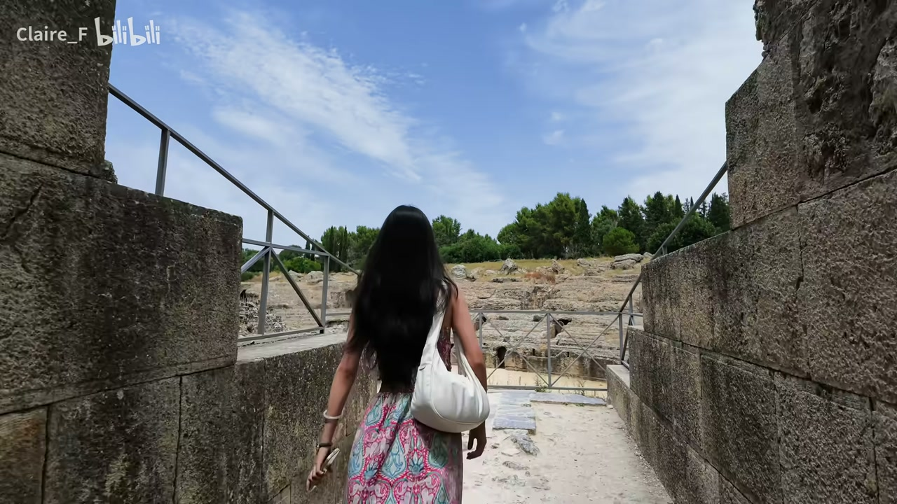
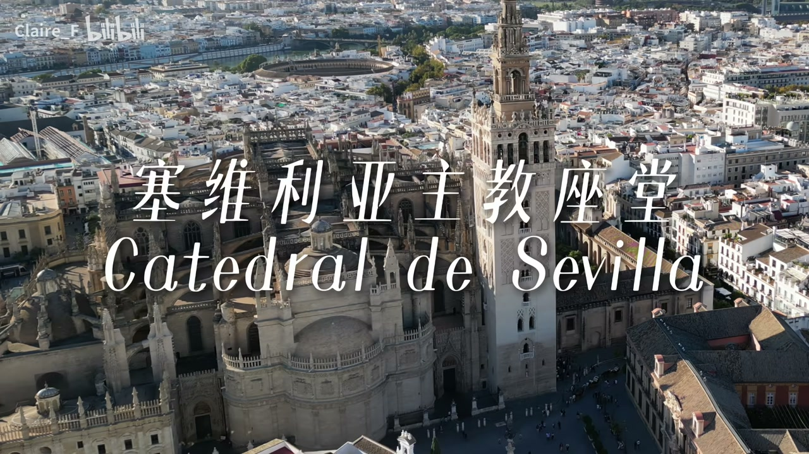
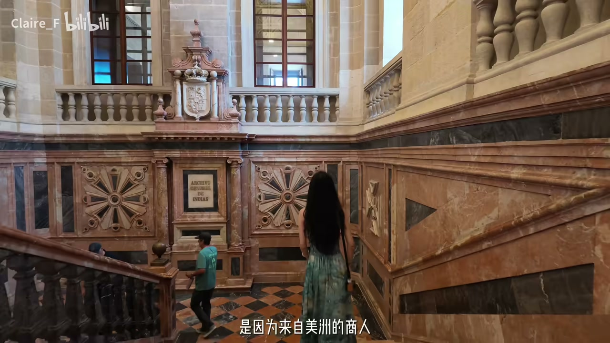
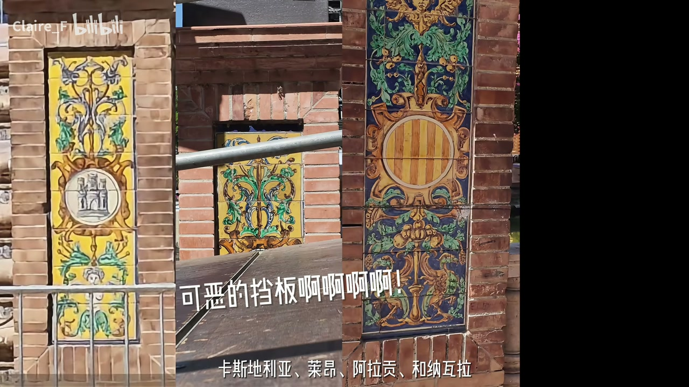
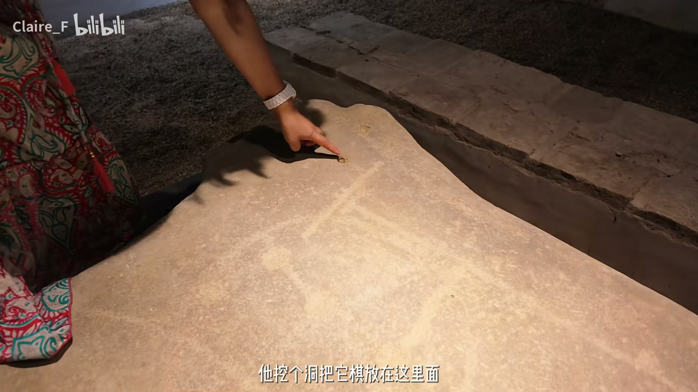

古罗马：意大利卡遗迹
00:40因为现在 2 点 12 分了，那人跟我说2 点半关门——博主喜欢根据历史时间线逛城市。
00:51第一站意大利卡：罗马人来到伊比利亚半岛后的第一个永居点（用家乡名字命名，意大利卡就是意大利）；这里是《权力的游戏》第七季和第八季的取景地——多恩第一次会面、龙妈第一次意识到“罗马的龙真的是真的”。
01:24保存非常完好的古罗马斗兽场，非常大，可以容纳约 2.5 万人。
01:54“面包与马戏”：斗兽场除了娱乐，还是政治工具——统治者一边免费发粮食一边给血腥表演，让民众分散注意力没空造反，顺便展示帝国实力。
02:39“卓耿就是从这里天降而来的吧”——权游名场面；可惜 2 点半关门，十分钟内拍完了所有东西。

主座教堂 + 吉拉达塔
03:43塞维利亚主座教堂和吉拉达台——最大的哥特式教堂，建在原有的清真寺基础上，安葬着大航海时代开启者哥伦布；教堂钟楼（吉拉达塔）也是由清真寺的宣礼塔改建而来。
04:34从教堂出来就是阿拉伯庭院式风格：这个喷泉以前是给信徒进清真寺之前洗手洗脚洗脸的地方。

塞维利亚王宫 + 档案馆
05:47黄牛票避坑：买了比官网贵 35 欧的第三方票，语音讲解还是山寨版。
05:58塞维利亚王宫：前身是伊斯兰在十世纪左右留下的工程，基督教王国征服后，国王在十四世纪扩建——但没有改成欧洲风格，而是变成一整座看上去像伊斯兰的宫殿：这位国王非常迷恋阿拉伯艺术，雇的都是摩尔人来量身定做——“在基督教统治下的伊斯兰艺术”。
07:20王宫隔壁西印度群岛档案馆：原本是给美洲商人建的交易所（商人在教堂门口喧闹惹火教会），后来变成存放航海时代档案的地方，还存放着哥伦布的亲笔手稿。
黄金塔 + 西班牙广场
07:49按时间线走进大航海时代——黄金塔：下半部分是 13 世纪摩尔人建的军事防御瞭望台，上面两层由基督教时代陆续加建，成为塞维利亚航海繁荣的象征。
08:29最有名的西班牙广场在办音乐节不让人进，周围全是音乐节架子——但它其实不是古老遗址：上个世纪为邀请曾经的殖民地办的美洲博览会而建，展示帝国余晖。
09:11设计隐喻：整座广场是巨大的弧形怀抱，开口朝向通往大西洋的瓜达尔基维尔河，象征重新拥抱美洲殖民地；弧形水道象征连接西班牙与美洲的海洋；水道上的四座拱桥代表四个古老王国（卡斯蒂利亚、莱昂、阿拉贡、纳瓦拉）；广场上 48 个彩色壁龛，每一个代表一个西班牙省份，壁画讲该省重大历史故事，脚下是省份地理版图。

都市阳伞：21 世纪的古罗马
10:1521 世纪最新地标都市阳伞——充满未来感；很多人不知道它底下就是 2000 年前的古罗马废墟：想要建楼上的伞时挖停车场，意外挖到了古罗马遗址。
11:13绕着伞走一圈就能看到博物馆入口（凭皇宫的票就能进来）——“他们要是可以横着再挖出去，可能能挖出来一整座城”。
11:51古罗马的棋盘（自己刻出来的，彩色石头是棋子）、淹鱼的鱼塘——“这样的古遗迹居然不拿围墙围起来”。

历史的闭环
12:07为什么把古罗马遗迹放在最后？博主一开始就喜欢按时间顺序——顺路方便，但更因为它很契合塞维利亚的主题：“这里像一个历史的闭环和文化的延续”。
12:25“每一个时代在这个城市都没有直接消失，而是新的文明或新的时代建立在这个古老文明的基础上——从教堂、到王宫、再到黄金塔，他们都是建立在原来文明的基础上，而不是把之前的文明彻底推翻。”
